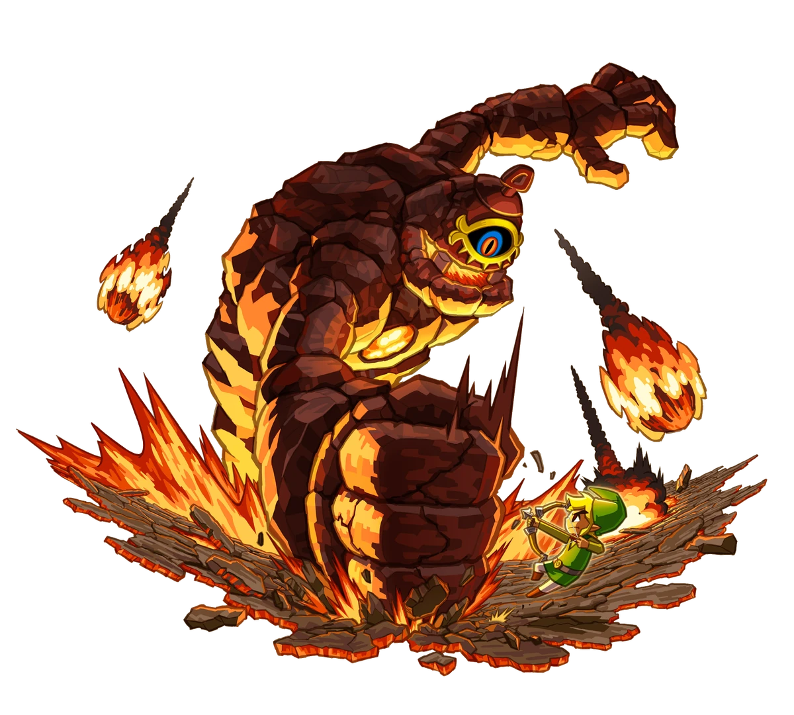

Mi jefe favorito de cada juego de Zelda que he jugado:
Link's Awakening
Facade (Templo del rostro)
Escogí este jefe porque me da cierto miedito y eso está bien, siento que es algo diferente a los demás. Derrotarlo es tan sencillo como arrojarle bombas a la cara (literalmente).
Ocarina of Time
Twinrova (Templo del Espíritu)
Lo más interesante que tiene este combate es reflejar con el Escudo Espejo los ataques que realizan ambas brujas para regresárselo según sus debilidades. La segunda etapa del combate es simplemente grandiosa.
Majora's Mask
Goht (Templo del Pico Nevado)
Es super cool perseguir al toro en sentido contrario como si fuera una carrera para pegarle en el cuerpo.
Minish Cap
Gyorg (Palacio de los Vientos)
Nos toca pelear con un par de mantarrayas voladoras. Son molestas pero la batalla es muy especial.
Twilight Princess
Octópulo (Santuario del Lago)
Una de mis favoritas bajo el agua, con buena mecánica de persecución y cambio de ritmo.
Phantom Hourglass
Hermanas diabólicas Cubus (Barco Fantasma)
Todos caímos en la trampa. El volley infernal con estas traidoras es memorable.
Spirit Tracks
Cragma (Templo del Fuego)
Una batalla sobre rieles que requiere cálculo y precisión. Muy distinta a las demás.
A Link Between Worlds
Grinexx (Isla Tortuga)
Una tortuga de fuego que da gusto derrotar con hielo. La pelea es muy satisfactoria.
Breath of the Wild
Ira del agua de Ganon (Vah Ruta)
De los jefes más molestos, pero también interesantes por el entorno y el uso del agua.
Tears of the Kingdom
Gelminus (Templo del Viento)
¡Batalla épica en el cielo! Calcular paravela y ataques con la ayuda de Tureli la hace genial.